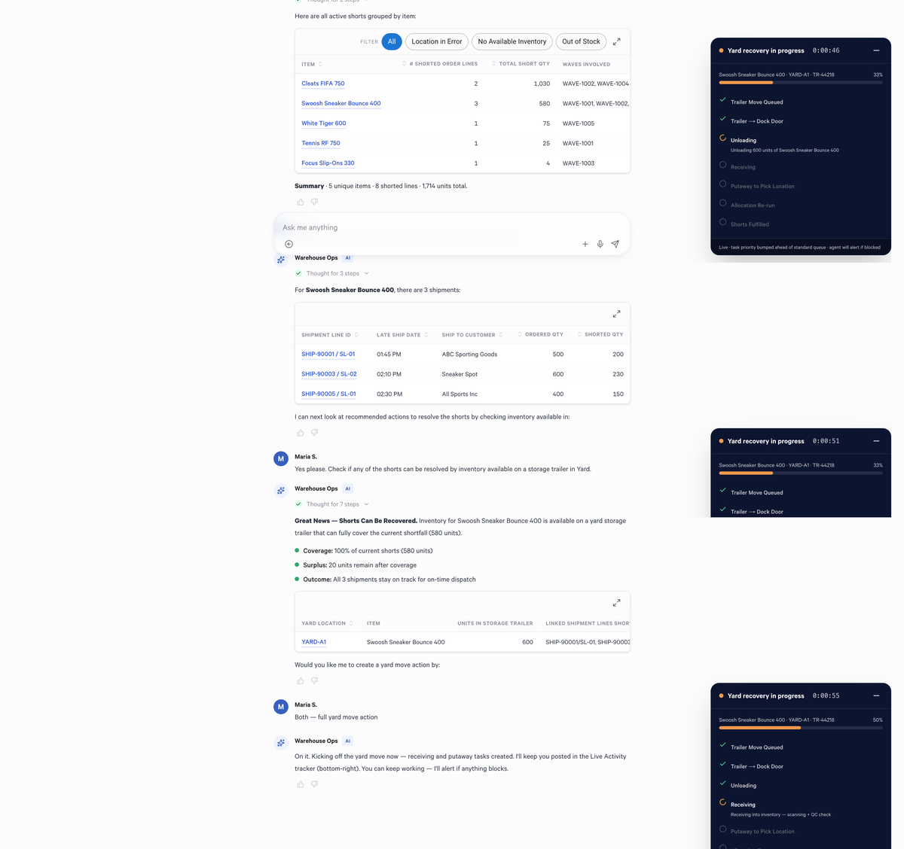

How the Model Training Factory works
Why generic AI fails in supply chain
General-purpose LLMs are strong at language understanding, but supply chain operations require capabilities that generic models don't provide out of the box.
Generic AI
- General-purpose language understanding
- Prompt-based, stateless interactions
- No operational context or workflow awareness
- Cannot execute against enterprise systems
- No continuous improvement from operations
Operational AI (Model Factory)
- Domain-specialized reasoning
- Structured multi-step planning
- Deep operational context and state awareness
- Tool orchestration and API execution
- Continuous learning from evaluation loops
The five-component architecture
Each component feeds the next. Evaluation results loop back into the data layer, creating a continuous improvement flywheel.
Data Layer
Cognitive Gym
Training
Agents
Evaluation
Expand each component to see what it does and where the key capabilities live.
1 · Operational Data Layer data ingestion
Operational intelligence requires operational data. The Model Factory uses multiple sources of operational context and workflow information to build realism and diversity that allows models to generalize across different warehouse environments and scenarios.
- Warehouse operational workflows
- Transactional patterns
- Simulation trajectories
- Evaluation datasets
- SME-guided operational examples
2 · Cognitive Gym simulation env
A high-speed simulation environment that mirrors operational workflows and APIs without impacting production systems. The gym allows the team to move beyond static prompting into iterative operational systems training.
- Rapid experimentation
- Safe failure testing
- Reinforcement learning episodes
- Trajectory generation at scale
- Repeatable evaluations
- Scalable operational learning
3 · Training & Continuous Learning fine-tuning pipeline
Rather than training frontier-scale foundation models from scratch, Blue Yonder builds on top of strong open-source foundation models and specializes them for operational workflows using a layered learning approach.
- Domain adaptation
- Supervised Fine-Tuning (SFT)
- Preference Optimization (DPO)
- Reinforcement Learning
- Evaluation Harnesses
- Regression Testing
- Continuous trajectory collection
4 · Operational Agents execution layer
The output of the Model Factory is an operational agent combining reasoning, operational context, workflow execution, and enterprise integrations into a unified system.
- Understanding operational state
- Investigating warehouse scenarios
- Using enterprise tools and APIs
- Executing structured workflows
- Recommending operational actions
- Supporting workflow automation
5 · Evaluation & Safety quality gates
Evaluation is a first-class component. Operational AI systems require measurable reliability, consistency, and safety. The goal is operational correctness and repeatability — not simply generating plausible answers.
- Scenario replay and benchmark suites
- Automated evaluation pipelines
- Human review gates
- Regression testing
- Confidence thresholds
- Guardrails and escalation mechanisms
Why this matters
The Model Factory enables Blue Yonder to move beyond static AI assistants toward operational intelligence systems. The long-term advantage compounds from systems, data, and continuous learning.
- Faster resolution — Operational issues investigated and resolved in minutes, not hours
- Workflow automation — Multi-step processes executed end-to-end by agents
- Scalable expertise — Operational knowledge available 24/7 across all sites
- Continuous improvement — Every interaction makes the system better
- Reduced overhead — Less manual investigation, more strategic decision-making
- Operational data flywheel — Each deployment generates training signal
- Domain expertise accumulation — Tacit knowledge captured systematically
- Evaluation infrastructure — Measurable, repeatable quality standards
- Simulation environments — Safe learning at scale
- Workflow integrations — Deep enterprise system connectivity
- Continuous learning systems — Always improving, never static
The Model Factory enables progression toward higher levels of intelligent automation:
First example: Allocation Shorts Agent
The first operational agent built using the Model Factory addresses one of the most common and time-consuming warehouse challenges: investigating allocation shortages.
What the agent does warehouse ops
When a warehouse cannot fully allocate inventory to outbound orders, operators must investigate why. This involves navigating multiple systems, checking inventory status, reviewing order priorities, and identifying root causes. Today, this process is manual and requires deep operational knowledge.
The Allocation Shorts Agent automates this investigation workflow end-to-end, combining reasoning about operational state with structured tool use across enterprise systems.
Agent workflow

Additional use cases
The same Model Factory infrastructure supports building agents for:
- Short order investigation
- Yard management optimization
- Inventory analysis and reconciliation
- Workflow optimization
- Operational exception handling
Sales enablement tracks
Structured resources for pre-sales teams to demonstrate, explain, and position the Model Factory during customer engagements.
Capability Walkthrough
Slides walking through core capabilities for business and technical audiences.
- What the Model Factory is and why it matters
- Architecture overview (5 components)
- Generic AI vs Operational AI positioning
- Levels of autonomy progression
- First agent use case demo flow
Functionality Deep Dive
Detailed functionality, configuration guidance, and targeted business use cases.
- Operational Agent capabilities and tool use
- Cognitive Gym simulation environment
- Evaluation and benchmarking pipelines
- Continuous learning and feedback loops
- Enterprise API integration patterns
Demo Access
Working demonstrations in demo environments with pre-configured data.
- Demo environment access and credentials
- Pre-configured scenarios to walk through
- Step-by-step guide for driving example executions
- Data ingestion setup and sample datasets
Limitations & Roadmap
Known limitations, pitfalls, and future directions.
- Current scope: WMS-centric warehouse operations
- Data dependency: Quality impacts agent performance
- Human oversight: Agents augment, not replace
- Future: World models, autonomy labs, expanded domains
Questions & Answers
A repeatable system for building, evaluating, improving, and deploying AI capabilities at scale. It includes continuous data ingestion, simulation and trajectory generation, evaluation and benchmarking, fine-tuning and reinforcement learning, and operational deployment and monitoring. The goal is not one-off models, but a scalable capability production system.
General-purpose models are strong at language understanding, but supply chain operations require:
- Deep operational context
- Structured reasoning
- Workflow execution
- Tool orchestration
- Consistent auditable decision-making
We specialize models for warehouse and supply chain execution to improve correctness, reliability, and business value.
RAG retrieves information from documents. Our approach goes further with operational reasoning, multi-step planning, tool execution, workflow automation, learning from operational trajectories, and continuous improvement through evaluation loops. We are building operational agents, not document chatbots.
We use a layered training approach: frontier foundation models as base intelligence, domain adaptation using warehouse workflows, supervised fine-tuning (SFT), preference optimization (DPO), and reinforcement learning using simulation environments. Models continuously improve through evaluation feedback and operational learning loops.
No. We build on top of strong open-source foundation models and specialize them for supply chain and warehouse operations. This lets us leverage the massive investment already made in general-purpose intelligence while focusing on operational reasoning, workflow execution, and enterprise-specific capabilities.
Reinforcement learning helps the model improve decision-making through simulation. The "gym" environment allows running scenarios safely, testing many operational variations quickly, rewarding successful task execution, and improving agent behavior iteratively — all without impacting production systems.
The architecture combines a simulation environment ("gym"), operational APIs and tool interfaces, data flywheel pipelines, evaluation harnesses, and fine-tuning/RL pipelines. Together, this creates a closed-loop learning system for warehouse operations.
The gym is a fast, safe simulation environment that mirrors warehouse operations. It enables rapid experimentation, trajectory generation, reinforcement learning, failure testing, and repeatable evaluations — all at scale, without impacting production systems.
Our agentic Operator models train with 100% synthetic data. Sources include warehouse operational workflows, transactional patterns, simulation trajectories, SME-guided examples, and evaluation datasets. All customer data usage follows contractual permissions and governance controls.
Governance is critical. Key controls include contractually permitted usage only, region-aware storage and processing, internal R&D environments only, and controlled access and retention policies. We treat governance as a first-class concern, not an afterthought.
Both serve different purposes. Real data provides operational realism, true workflow patterns, and real-world edge cases. Synthetic and simulated data helps expand coverage, generate rare scenarios, and scale training safely. The combination balances realism and scalability.
We capture expertise through workflow walkthroughs, operational demonstrations, meeting transcripts, human feedback loops, evaluation reviews, and trajectory correction. The goal is to convert tacit operational knowledge into reusable training and evaluation signals.
A large part of warehouse expertise is undocumented. We learn it by observing operational decisions, comparing successful vs. unsuccessful workflows, capturing repeated expert patterns, and feeding corrections back into the flywheel. Over time, the system accumulates operational knowledge and decision patterns.
Human expertise remains essential. SMEs provide workflow understanding, evaluation feedback, exception handling, operational policy guidance, and validation of model behavior. The goal is augmentation and scalability of expertise, not removal of human oversight.
We evaluate across multiple dimensions: operational correctness, scenario completion, tool-use accuracy, consistency, latency, human evaluation, and benchmark and regression suites. The focus is operational reliability, not just conversational quality.
Generalization is a key design principle. We address this through diverse operational patterns, simulation variability, cross-environment evaluation, and synthetic scenario expansion. The goal is reusable operational intelligence, not customer-specific memorization.
Enterprise AI systems require guardrails and controlled autonomy. Key mechanisms include scoped permissions, human escalation paths, confidence thresholds, auditability, evaluation gates, and safe fallback behavior. The system is designed to operate safely within defined boundaries.
Blue Yonder combines deep supply chain expertise, a large operational customer footprint, real execution system integration, historical operational data, and existing workflow understanding. This creates a strong foundation for operational AI systems.
The moat is not prompts or a single model. It comes from the operational data flywheel, domain expertise, evaluation infrastructure, workflow integrations, simulation environments, and continuous learning systems. This creates compounding advantages over time.
Frontier models provide strong general intelligence. Our differentiation comes from operational context, workflow orchestration, domain specialization, tool integrations, evaluation infrastructure, and continuous operational learning. The value is in the system and flywheel around the model.